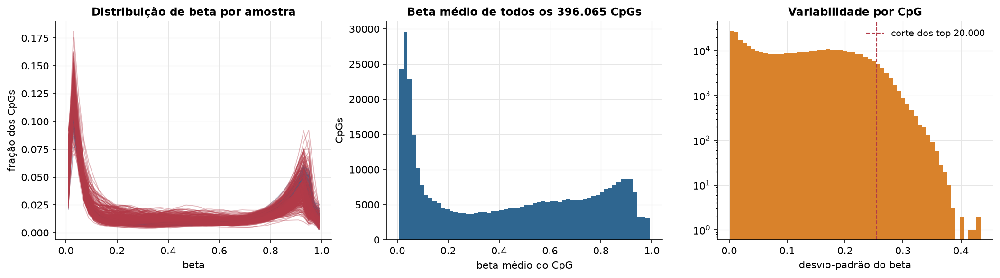
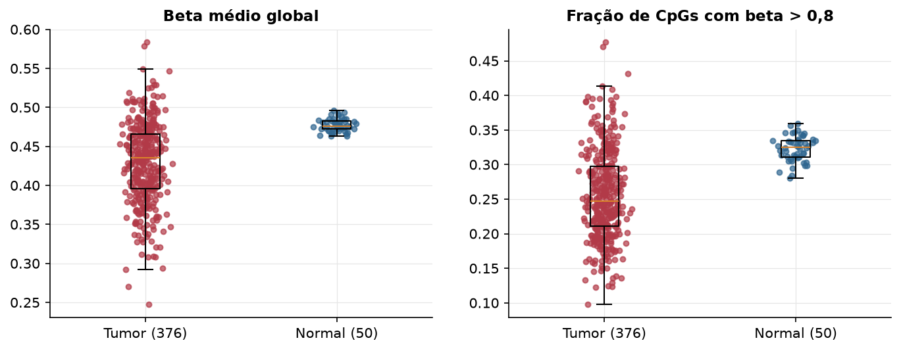
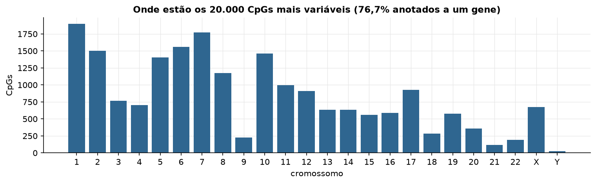
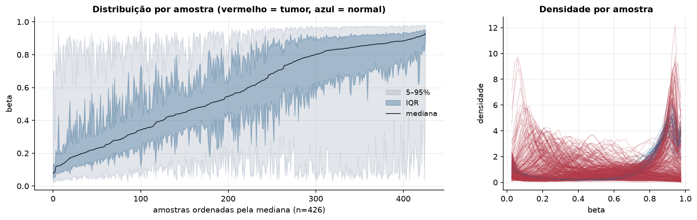
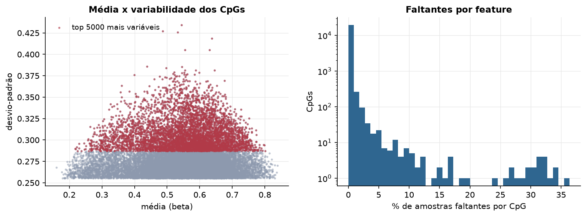
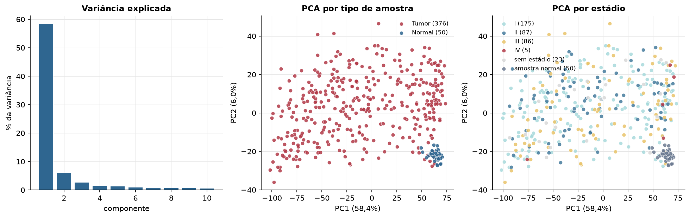
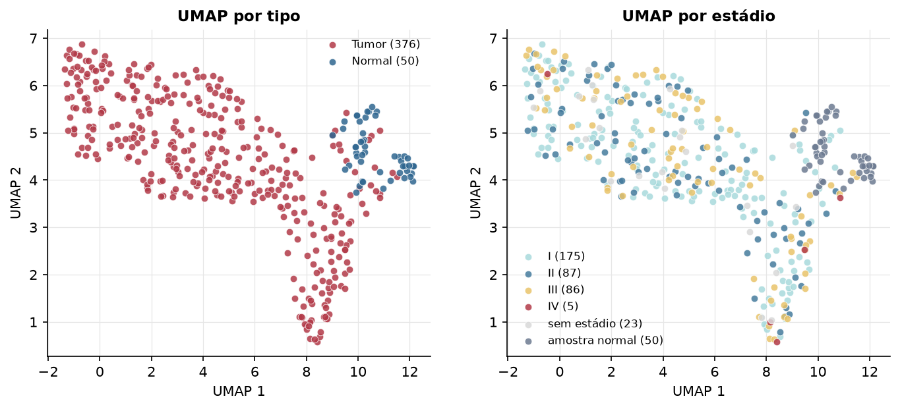
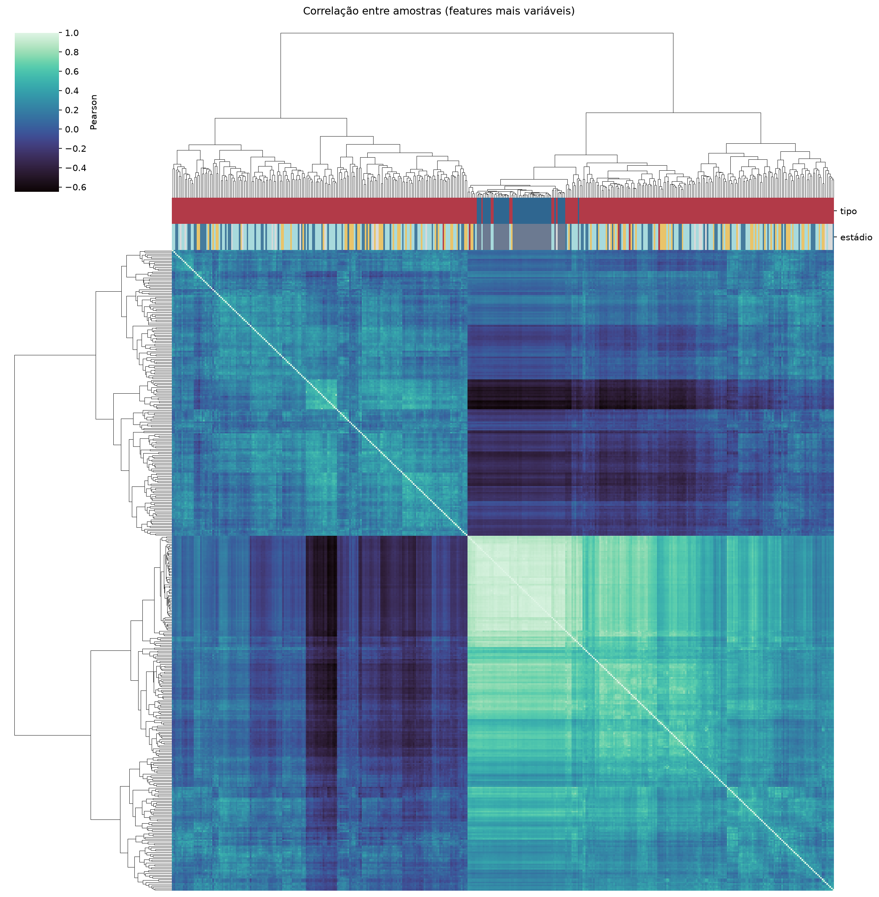
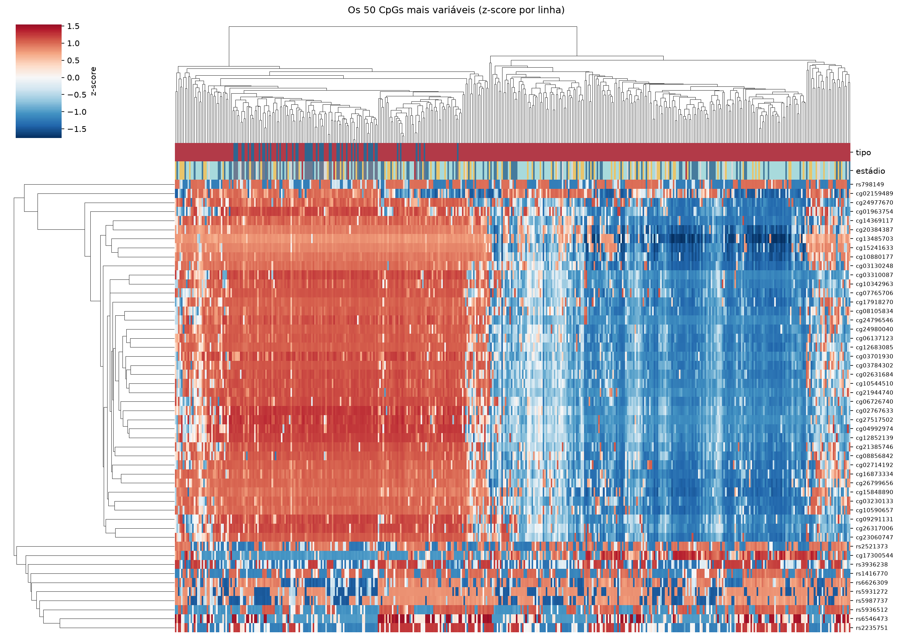
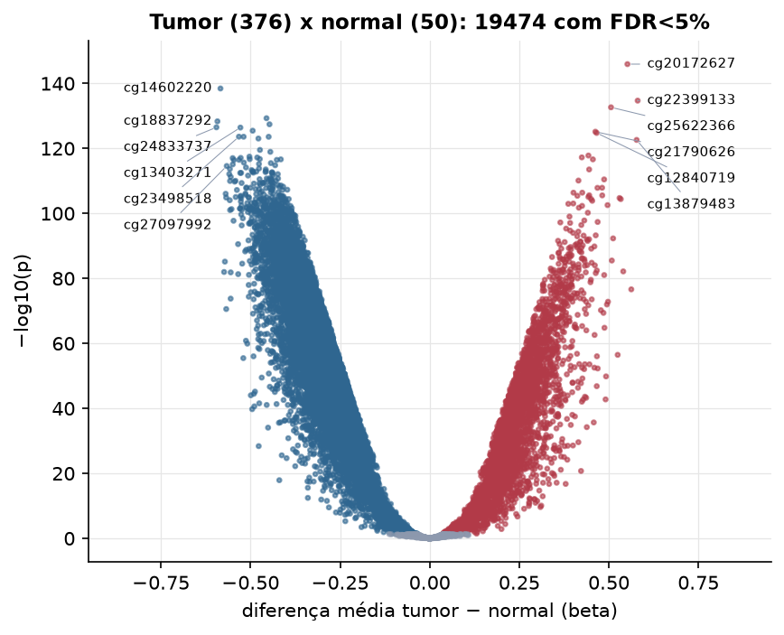

LIHC · Metilação do DNA (450k)
Illumina Infinium HumanMethylation450, valores beta (0 a 1) · gerado em 22/10/2026 00:33
396.065CpGs medidos
369.213CpGs sem faltante
20.000CpGs
376amostras tumorais
50amostras normais
0,1%valores faltantes
Fonte: PanCanAtlas HM450 via API do Xena
O array tem ~485 mil CpGs. Para não ocupar espaço, guardamos estatísticas de todos os CpGs e só os 20.000 mais variáveis para PCA, UMAP e heatmaps.
Principais resultados
- A distribuição de beta é bimodal: a maioria dos CpGs está quase toda desmetilada (perto de 0, típico de ilhas CpG em promotores) ou quase toda metilada (perto de 1, corpo gênico e regiões intergênicas). 44,9% dos CpGs têm beta médio intermediário (0,2 a 0,8).
- Beta médio global: 0,435 nos tumores e 0,476 nos normais (hipometilação global no tumor, como é comum em câncer).
- 20.000 CpGs medidos em 426 amostras (376 tumorais e 50 normais); 0,1% dos valores estão faltando.
- Os dois primeiros componentes principais explicam 58,4% e 6,0% da variância das features mais variáveis.
- Correlação mediana entre amostras: 0,17.
- Tumor x normal: 19474 CpGs diferentes com FDR < 5% (3343 maiores no tumor, 16131 maiores no normal; 50 pacientes têm o par tumor-normal).
- Mais aumentados no tumor: cg20172627, cg22399133, cg25622366, cg21790626, cg12840719, cg13879483, cg20980783, cg22167515.
- Mais reduzidos no tumor: cg14602220, cg02442572, cg18837292, cg27318774, cg24833737, cg13403271, cg07623037, cg23498518.
- Associações clínicas com p < 0,05 nos componentes principais: PC3 com estádio (p=0.028); PC1 com sexo (p=0.0064); PC3 com sexo (p=4.8e-08); PC1 com idade (p=4.8e-09); PC2 com idade (p=0.0015); PC3 com sobrevida (p=0.0023).
Distribuição global



Exploração dos CpGs mais variáveis
Distribuição dos valores


Estrutura das amostras




Tumor x normal

Features mais diferentes entre tumor e normal
| diferenca_tumor_menos_normal | t | p | fdr | |
|---|---|---|---|---|
| cg20172627 | 0.552 | 41.612 | 1.15e-146 | 2.29e-142 |
| cg14602220 | -0.584 | -38.194 | 3.57e-139 | 3.57e-135 |
| cg22399133 | 0.58 | 37.374 | 1.97e-135 | 1.31e-131 |
| cg25622366 | 0.506 | 38.713 | 2.24e-133 | 1.12e-129 |
| cg02442572 | -0.455 | -36.218 | 5.06e-130 | 2.02e-126 |
| cg18837292 | -0.592 | -36.728 | 4.56e-129 | 1.52e-125 |
| cg27318774 | -0.447 | -35.45 | 3.75e-128 | 1.07e-124 |
| cg24833737 | -0.595 | -37.37 | 3.18e-127 | 7.94e-124 |
| cg13403271 | -0.528 | -35.045 | 3.8e-127 | 8.45e-124 |
| cg07623037 | -0.494 | -35.199 | 3.5e-126 | 7e-123 |
| cg21790626 | 0.462 | 35.286 | 7.19e-126 | 1.31e-122 |
| cg12840719 | 0.466 | 34.721 | 1.72e-125 | 2.87e-122 |
| cg23498518 | -0.532 | -34.335 | 2.41e-124 | 3.47e-121 |
| cg26547526 | -0.519 | -34.799 | 2.53e-124 | 3.47e-121 |
| cg24107750 | -0.449 | -34.315 | 2.6e-124 | 3.47e-121 |
| cg02216247 | -0.478 | -34.255 | 9.02e-124 | 1.13e-120 |
| cg13879483 | 0.577 | 37.334 | 2.42e-123 | 2.85e-120 |
| cg07548313 | -0.474 | -33.518 | 2.91e-120 | 3.23e-117 |
| cg13152531 | -0.445 | -33.341 | 1.13e-119 | 1.19e-116 |
| cg20980783 | 0.443 | 32.906 | 1.54e-118 | 1.54e-115 |
| cg13661012 | -0.503 | -33.294 | 3.41e-118 | 3.25e-115 |
| cg22167515 | 0.424 | 32.697 | 5.71e-118 | 5.19e-115 |
| cg27099991 | -0.481 | -32.923 | 6.27e-118 | 5.45e-115 |
| cg16035036 | -0.527 | -33.323 | 8.25e-118 | 6.87e-115 |
| cg09210956 | -0.55 | -32.914 | 9.5e-118 | 7.6e-115 |
| cg08844913 | -0.474 | -32.574 | 1.82e-117 | 1.4e-114 |
| cg26151206 | -0.502 | -37.359 | 2e-117 | 1.48e-114 |
| cg01379207 | -0.415 | -32.852 | 2.34e-117 | 1.61e-114 |
| cg26149244 | 0.455 | 32.645 | 2.34e-117 | 1.61e-114 |
| cg15549700 | -0.532 | -33.155 | 3.27e-117 | 2.17e-114 |
Associação com variáveis clínicas
p-valores da associação dos três primeiros componentes principais (só tumores) com estádio (Kruskal-Wallis), sexo (Mann-Whitney), idade (Spearman) e sobrevida global (Cox univariado).
| estádio (Kruskal) | sexo (Mann-Whitney) | idade (Spearman) | sobrevida OS (Cox) | |
|---|---|---|---|---|
| PC1 (55,8%) | 0.205 | 0.006 | 4.84e-09 | 0.526 |
| PC2 (5,2%) | 0.314 | 0.949 | 0.001 | 0.86 |
| PC3 (2,7%) | 0.028 | 4.84e-08 | 0.645 | 0.002 |